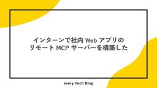

every Tech Blog
https://tech.every.tv/
株式会社エブリーのTech Blogです。
フィード

個人情報を自社のDBに持たない設計は、どこまでできるのか 219
219
every Tech Blog
はじめに こんにちは、開発1部の新谷です。 最近、個人情報の漏洩のニュースが増えています。私は普段セキュリティを専門にしているわけではありませんが、漏洩への対策として、そもそも自社で個人情報を持たないように設計する方法はすぐに思いつくと思います。 ただ、それを具体的にどう実現するのかは、詳しく調べたことがありませんでした。そこで今回、認証や決済などを外部サービスに任せることで、自社のDBからどこまで個人情報をなくせるのかを調べて考えてみました。 DBに持たないことで防げる場面 DBに個人情報を持っていなければ、DBやそのコピーを抜かれても個人情報は漏れません。設定ミスでDBが外から見えてしまっ…
1日前

AIが提示した候補を承認するだけで営業活動を記録できる仕組みを作った話
every Tech Blog
はじめに こんにちは。株式会社エブリーで約1ヵ月間インターンシップに参加していた山下と申します。 今回のインターンでは、AIを活用して社内の業務変革を進める「AX(AI Transformation)プロジェクト」に参加しました。主に取り組んだのは、次の2つです。 営業活動（Event）の記録を効率化するための、Slack botのバックエンド設計・実装 案件（Opportunity）の記録を効率化するための、提案資料からの情報抽出の検証 この記事では、開発の背景や技術的な取り組みに加えて、初めての技術や営業業務をどのように理解し、社員の方と相談しながら進めたかについても紹介します。 プロジェ…
2日前

手でコードを書いたことがない未経験新卒が、「一人前になれるのか」と悩んだ半年 1
every Tech Blog
AIがコードを書くのが当たり前の環境で、文系未経験からエンジニアになった新卒の半年。Claude Codeでリリースはできても理解負債が溜まり「一人前になれるのか」と悩んだ経験と、そこから見えてきたことをまとめました。
5日前

インターンで社内 Web アプリのリモート MCP サーバーを構築した
every Tech Blog
はじめに こんにちは、株式会社エブリーのデリッシュキッチン開発部にて、9 月から約 1 か月間エンジニアとしてインターンシップに参加していました、渡邉 蒼太 @asutoです。 今回のインターンで私は、社内の Web アプリ「ストアビジョンダッシュボード」のデータを Claude から読めるようにする、社内用のリモート MCP1 サーバーの開発に取り組みました。 認証の設定、ダッシュボードのバックエンドサーバーの改修、MCP サーバーの実装、AWS の実行環境とデプロイの仕組みの構築までを行い、dev 環境で動かせるようにしました。 ストアビジョンの営業担当者（広告主に広告枠を販売する担当者）…
5日前
MySQLバージョンアップ時の動作確認に、既存ログとAIを活用した話
every Tech Blog
はじめに こんにちは、リテールハブ開発部で小売アプリ開発を行っているホシと申します。 先日、担当しているシステムでMySQL 8.0から8.4へのバージョンアップ対応を行う機会がありました。 今回はシステム全体の仕様や実装を十分にまだ把握できていない状態からの対応だったため、事前の影響調査や動作確認をどのように進めるかが課題となりました。 その中で特に役立ったのが、既存のAPIログとAIを活用した、新旧環境の動作比較です。 従来であれば手間のかかっていた広範囲の動作確認を、想像以上に手軽に実施できたことが今回の大きな収穫でした。 そこで本記事では、以下の点についてお話できればと思います。 My…
8日前
Claude CodeのハーネスはMCPとCLIのどちらで作るか
every Tech Blog
目次 はじめに 前提 結論 理由1: プログラムの呼び出しを1つのシェルコマンドに合成できる 理由2: 修正が次のツール呼び出しから反映される MCPを選ぶ場面 まとめ 参考文献 はじめに こんにちは、ヘルシカでiOSエンジニアをしている谷口恭一です。 Claude Codeに開発の作業を任せるようになって私が必要だと感じたのは、人が確かめなくてもエージェントが作業を最後まで進められる状態でした。結果を毎回自分で確かめて、指示し直すのをやめたかったからです。そのためにClaude Codeに足そうと考えたのは、2つの仕組みでした。1つは、エージェントがルールから外れないようにするガードレール。…
12日前
AI時代に業務に入り込み社内システムを作り直して学んだこと
every Tech Blog
目次 はじめに 背景 UserMatching（UM）と社内システム 社内システムの課題 目指したこと 業務に入り込む進め方 ヒアリングで業務を知る ヒアリングから始めた理由 どう進めたか 分かったこと 設計でつまずいたこと AIが作った設計を判断できなかった やりたいことが広がりすぎた ひとりで考え込んでしまった どう乗り越えたか 自分で判断できるように、進め方を決めた 広がった範囲を、目的に合わせて絞った ひとりで抱えず、考えをチームに見せた 設計を終えて実装へ AIの時代に大切だと感じたこと 設計の進め方を持っておく 人に見てもらう チームで一緒に考える おわりに はじめに こんにちは、…
15日前
速くて安いAI「Jev」でQAを自動化してみた
every Tech Blog
はじめに こんにちは！株式会社エブリーで1ヶ月間、iOS エンジニアとしてインターンをしていた木村風葉です。ヘルシカの iOS チームで、食事記録まわりの改善や無料会員向けの機能追加など、いくつかの機能開発に取り組みました。 この記事では、インターンの後半に取り組んだ「Jev」という新しいAIを使った検証ツールづくりについて書きます。Jevは、文章を生成する代わりに「選択肢のどれを選ぶか」を確率付きで返すAIです。これを使ってiOSシミュレータ上のアプリを自動で触り回らせ、不具合を探す仕組みを作りました。 なお、ヘルシカの開発チームでは、AI コーディングツールの Claude Code を日…
16日前
Claude Code ぶん回して仕様駆動開発を実践してみた 〜 設計書3.6万行と6つの落とし穴 〜
every Tech Blog
3〜7 名・3 か月で、Go の API、AWS の基盤、Flutter の 業務アプリを Claude Code 中心に新規開発した記録です。設計書を先に Fix する仕様駆動開発（SDD）に近い進め方と、AI の尤もらしい誤りや膨らむ設計書など、6 つの落とし穴と対策をまとめました。
18日前
Unity CatalogのData ClassificationとABACで機密データを検出しマスクする
every Tech Blog
はじめに こんにちは 開発本部 開発1部 デリッシュリサーチでデータエンジニアをしている吉田です。 今回は、Unity CatalogのData Classificationで機密データを含むカラムを自動検出し、付与されたタグをもとにABACのcolumn maskポリシーでマスクするまでを試した話を紹介します。 注意点 本記事の検証に使ったデータは、すべてFakerで生成した架空のものです。 実在する人物や実環境のデータは含んでいません。 また、テストに使ったテーブルは検証用に新しく作ったものです。 Data Classificationはインテリジェントなスキャンでコストを最適化とあるため…
22日前
Claude Code のハーネス、別リポジトリからコピペしてない？
every Tech Blog
「あ、こっちのリポジトリにスキル移植してなかったや。コピペしとこ」 Claude Code を使っていると、一度はやりますよね。 新規リポジトリに新しくハーネスを移植する際など、あまり良くないとわかりつつ、やりがちだと思います。 そこで今回は、株式会社エブリー Android チームでの、ハーネスの一元管理方法について紹介します。 3 つのリポジトリでコピペしていたハーネスを 1 か所にまとめ、合計 5,254 行の設定を消せました。 「本当は一元管理した方が良いのだろうな」と思っているあなたの一助になれば幸いです。 1. まとめ コピーした設定はズレていくため、一元管理した方が良い。 リポジ…
23日前
Agent 向けのリアーキテクチャは誰の開発効率を上げたのか
every Tech Blog
はじめに デリッシュキッチン開発部でデジタルサイネージの開発を行っている鈴木（@0muji4_eng）です。 昨今、Cursor や Claude Code などの自律型 LLM Agent を活用した開発が一般的になりつつあります。「Agent に気持ちよくコードを書かせるためには、アーキテクチャを Agent 向けに整える必要がある」という言説も、見かけるようになりました。 私も、広告配信の案件管理を行うための巨大な React アプリを AI 駆動開発に最適化すべく、全面的なリアーキテクチャを実施しました。 しかし、同一タスクを LLM Agent に実行させて前後で定量的に計測したとこ…
25日前
Amazon Cognito で MCP サーバーを認可するときのクライアント登録について
every Tech Blog
はじめに こんにちは、リテールハブ開発部の杉森です。 社内向けのリモート MCP サーバーを Amazon Bedrock AgentCore Gateway 上に構築する検証を進めており、認証には Amazon Cognito を使っています。Claude のカスタムコネクタや Claude Code から OAuth で接続する構成を調べる中で、MCP のクライアント登録の方式と、それに対する Cognito の対応状況が気になったので調べてみました。 本記事では、調べた内容の整理と、検証環境で実際に接続を試した結果を紹介します。内容は 2026 年 9 月時点の情報に基づいています。 M…
1ヶ月前
AI AgentのタイムアウトからGoのイテレータを俯瞰する
every Tech Blog
先日、アプリ版デリッシュキッチンでGenerative UIを搭載したデリッシュAIをリリースしました。この記事ではAI Agentが引き起こしたタイムアウトのバグから、Go 1.23で入ったイテレータについて俯瞰してみたいと思います。
1ヶ月前
iOSDC Japan 2026 に参加してきました！
every Tech Blog
はじめに 株式会社エブリーは、2026年9月11日（金）〜13日（日）に有明セントラルタワーホール＆カンファレンスで開催された iOSDC Japan 2026 に、ゴールドスポンサーとして参加しました！ 開発本部から6名のエンジニアが現地参加したので、ブースの様子や印象に残ったセッションをご紹介します。 会場の様子 3日間で70本以上のトークや LT が行われ、現地には約1,000名規模の参加者が集まる大盛況でした。 セッションやブース以外の企画も盛りだくさんで、朝9:30からドーナツサービスに始まり（おいしかった！！！）、声優さんによる館内アナウンス、スポンサーブースを回るスタンプカードビ…
1ヶ月前
新規開発で構築した AI ネイティブな開発環境と今感じている課題
every Tech Blog
「具体的な中身を作っていくのは AI」という前提のもとで開発環境全体を設計するにあたり、どのような環境を構築したのか、実際の開発フローはどうなっているのか、実際の開発を通じて感じている課題について紹介したいと思います。
1ヶ月前
Go Conference 2026 に Silver スポンサーとして参加してきました！
every Tech Blog
2026年9月11日(金)に中野セントラルパークで開催された「Go Conference 2026」に今年も参加させていただきました！今年も参加レポートとして、会場の様子やセッションの感想についてお届けします！今年のテーマは「**Go Far, Go Together**」でした。このテーマの通り、人との繋がりを重要視していることが強く感じられるカンファレンスだったと思います。sanposhihoさんのKeynoteセッション「Open Source, Open World」に始まり、コミュニケーションスペースのGo Context Wall、伝Go板、スポンサーブース、難易度別セッション・ワークショップ、そして最後は懇親会と、Goを始めたての人でも、熟練の方でも最初から最後まで楽しめたカンファレンスだったのではないかなと思います。
1ヶ月前
iOSDC Japan 2026 にゴールドスポンサーとして協賛します！
every Tech Blog
はじめに この度、株式会社エブリーは、2026年9月11日（金）〜13日（日）に開催される「iOSDC Japan 2026」に、ゴールドスポンサーとして協賛することになりました！ 弊社はこれまで Go Conference や TSKaigi などに協賛してきましたが、今年は9月頭の DroidKaigi 2026 に続いて、iOSDC Japan にも初めて協賛します。初めての参加ということで、ブースでどんな方々とお話しできるのか、今から楽しみにしています。 本記事では、開催概要と弊社のブース企画、iOSDCチャレンジのトークン紹介、そしてアフターパーティーのご案内をお届けします。 iOS…
2ヶ月前
Go Conference 2026 に今年はSilver スポンサーとして協賛いたします！
every Tech Blog
この度、株式会社エブリーは、2026 年 9 月 11 日(金)に開催される「Go Conference 2026」に、Silver スポンサーとして今年も協賛することになりました。Go Conferenceとは、プログラミング言語 ”Go”ユーザーのためのカンファレンスです。今年はハイブリッド開催で、会場でのセッションやワークショップに加え、セッションのオンライン配信も予定されています！
2ヶ月前
Codespaces で開発環境を配布する
every Tech Blog
Codespaces で開発環境を配布する はじめに エブリーでデリッシュキッチンの開発をしている本丸です。 毎年、エブリーでは夏季にインターンシップを行っているのですが、今年は今まで行っていた長期のほかに短期でのインターンシップも行っています。 そこで問題になったのが、参加者の開発環境をどうするかというものでした。 本記事では、GitHub が提供している Codespaces を利用してどのように開発環境を用意するのか、組織で Codespaces を利用する上で設定した項目についてお伝えできればと思います。 GitHub Codespaces とは GitHub Codespaces は…
2ヶ月前
DroidKaigi 2026 に参加してきました！
every Tech Blog
はじめに 2026年に開催された DroidKaigi 2026 に、弊社の開発本部から 3 名のエンジニアが参加してきましたので、イベントの様子や印象に残ったセッションをご紹介します。 イベントの様子 スポンサーブース エブリーは今回、ゴールドスポンサーとしてブースを出展させていただきました！ 足を運んでいただいた皆様、本当にありがとうございました！ ブース企画 アンケートボード ブースでは、「AI時代！どこまで越境したいですか？」をテーマにした参加型のアンケートボードを実施しました！ Android開発をベースにしつつ、バックエンドやPdM、データサイエンスといった他の領域へどのようにスキ…
2ヶ月前
DroidKaigi 2026 にゴールドスポンサーとして協賛します！
every Tech Blog
はじめに 株式会社エブリーは、2026年9月に開催されるDroidKaigi 2026にゴールドスポンサーとして協賛いたします。「エンジニアが主役のAndroidカンファレンス」である本イベントは、2026年9月1日（火）から3日（木）にかけてベルサール渋谷ガーデンで開催されます。 項目 詳細情報 イベント名称 DroidKaigi 2026 開催日程 2026年9月1日（火）〜 9月3日（木） 会場 ベルサール渋谷ガーデン（東京都渋谷区南平台町） スポンサーランク ゴールドスポンサー ブース出展日程 2026年9月2日（水）〜 9月3日（木）の2日間 エブリーはこれまでも、Go Confer…
2ヶ月前
画面を離れても回答が完成するAIチャットを作った話
every Tech Blog
はじめに 前提：エージェントの構成 課題：画面を離れると回答が消える 設計方針：実行の作成と購読を分離する DB スキーマ：残す履歴と実行中の状態を分ける 保存単位は「AG-UI の Message 1 件 = 1 行」 DynamoDB ではなく Aurora MySQL を選んだ理由 会話履歴はサーバーが組み立てる 書き込み設計：イベントは保存せず「生成途中の回答」を上書きする 再合流：会話全体のスナップショットで追いつく 同時実行制御：実行中ロックを NULL 可のユニーク列で作る ロックの解放漏れに備える 停止：切断とキャンセルを区別する Redis は要るか まとめ はじめに 開発本…
2ヶ月前
Next.js 16.3のPartial Prefetchingをプロダクトで検証してみる
every Tech Blog
目次 はじめに Partial Prefetchingは何を解決するのか すべてを先読みする方法と、何も先読みしない方法の中間を作る OISHYでPartial Prefetchingを試す 検証条件 計測方法 実験1：クリック前の取得を減らすと、通信と遷移はどう変わるか 実験2：URL固有のデータを待つ間に何が見えるか 補足：適用範囲によって先読みの形が異なった まとめ 参考文献 はじめに こんにちは、開発本部の黒髙です。最近はアメリカ向けレシピサービスであるOISHYの開発に関わっています。 Next.js 16.3では、ページ遷移の応答性を改善する仕組みとしてInstant Naviga…
2ヶ月前
Retention Messaging でサブスクリプションの解約画面から継続利用を促せるようになるらしい
every Tech Blog
title はじめに こんにちは、株式会社エブリーでデリッシュキッチンのiOSアプリの開発をしている成田です。 現在は、プレミアムユーザーの登録数の向上やプレミアムユーザーの体験をより良くすることを目的としたチームで開発をしています。 サブスクリプションの解約は、これまで開発者にとってブラックボックスでした。ユーザーが App Store の管理画面で「サブスクリプションをキャンセルする」を押すとき、アプリ側にできることは何もありません。引き止めのメッセージも、オファーの提示も、そもそも解約されようとしていることを知ることさえ、その瞬間にはできませんでした。 WWDC26 で発表された Ret…
2ヶ月前
Cloudflare Walletsが使う決済プロトコル x402 を理解する
every Tech Blog
Cloudflare Walletsが使う決済プロトコル x402 を理解する 目次 はじめに x402が対象とする課題 プロトコルフロー ② 402 Payment Required と PaymentRequirements scheme が取る値 — exact と upto ③ authorization への署名 ④ PaymentPayload の送信 ⑤ verify / settle と facilitator 決済の確定と不可逆性 HTTPを利用する構成のメリット 支払ってよいかの判断は仕様の範囲外 まとめ 参考 はじめに こんにちは、開発本部開発1部の 赤川 です。食事管理…
2ヶ月前
Lakebaseの認証実装とORM選定をした話
every Tech Blog
はじめに こんにちは、株式会社エブリーのデリッシュキッチンにて7月から約1か月間エンジニアとしてインターンシップに参加していました、亀井と申します。 この記事では、インターン中に取り組んだことの中心である「Databricks LakebaseへのOAuth M2M認証の導入」と、その先でデータを読むための「GoのPostgreSQL向けライブラリ選定」の2つについて、どう実装・検証・調査したのかを書きたいと思います。 インターンで取り組んだこと インターンでは、Go言語で書かれたデリッシュキッチンのAPIサーバーを主な対象として、次の4つに取り組みました。 デリッシュAIの表示順ソートのロジ…
3ヶ月前
CodeRabbit の 2026 年アップデート内容を追ってみる
every Tech Blog
はじめに こんにちは。リテールハブ小売アプリ開発チームの池です。 小売アプリチームでは、昨年から CodeRabbit を利用して PR レビューを行っています。日々活用してはいるものの、アップデートの内容を追いきれていませんでした。そこで本記事では、2026 年にアップデートされた内容を整理し、気になった機能をピックアップして紹介します。 なお、本記事の内容は 2026 年 8 月 12 日時点の情報をもとにしています。CodeRabbit はアップデートの頻度が高いため、機能の挙動やプラン要件は変わっている可能性があります。最新の情報は公式ドキュメントをご確認ください。 また、私たちのチー…
3ヶ月前
LakebaseはUnity Catalogのデータをアプリに届ける選択肢になるか
every Tech Blog
はじめに こんにちは、開発1部でデリッシュキッチンの開発をしている蜜澤です。 現在データ基盤はDatabricksを使用しており、データはUnity Catalog（以下UC）のテーブルです。 UCのテーブルをプロダクトのAPIから配信したいという状況が直近の1年で増えてきました。 例えば、「レコメンド結果をアプリの画面に出したい」「集計したアプリのログデータを分析できる社外向けのダッシュボードツールを作成したい」といった要望があります。 これをアプリ側から読めるようにするには、UCのテーブルのデータをAPIが参照できるDBに複製する必要があります。DatabricksのLakebase（マネ…
3ヶ月前
Cost Optimization Hubを使ってAWSのコスト削減に取り組んだ
every Tech Blog
はじめに こんにちは！デリッシュキッチンで主にバックエンドの開発を担当している秋山です。 AIツールの導入などで、ツール費用が増えている方も多いのではないでしょうか。 有料ツールを導入すると当然支出は増えますが、予算が無限にあるわけでもありません。 私も先日、有料ツールを導入したいと考えたときにコストの壁にぶつかりました。 そこで「先に既存のムダを削って、浮いた分の範囲内でまずは導入/検証する」という進め方を取ることにしました。 その中でコストとどう向き合うか考えるきっかけになったので、その時のことを紹介していきます。 どうやってコスト削減に取り組んだか コスト削減の対象として真っ先に思いつい…
3ヶ月前